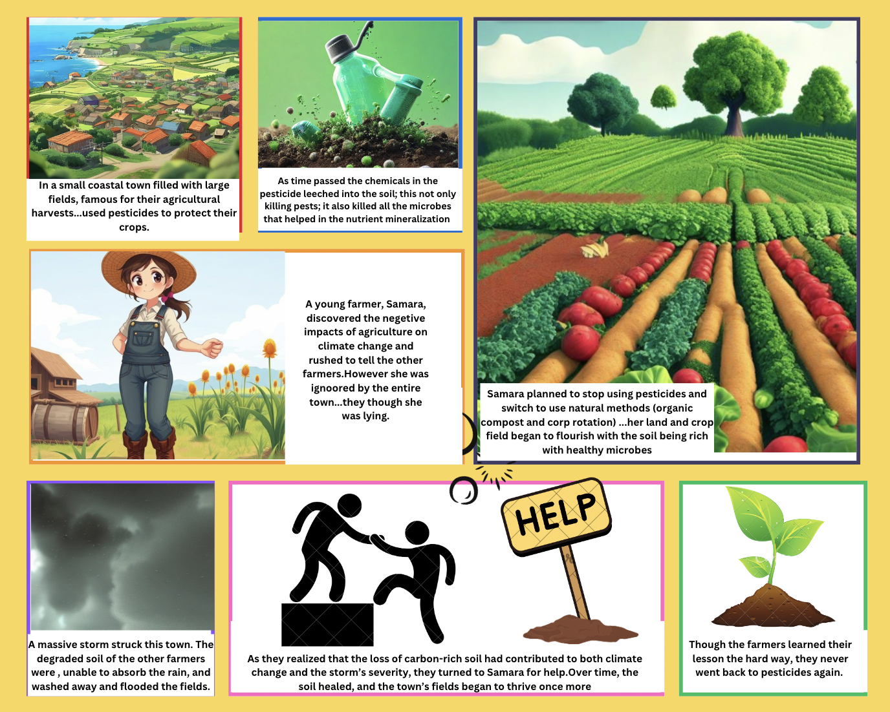

In a small coastal town filled with large fields, famous for their agricultural harvests, the
farmers were extremely proud of their abundant crops. Every season, these farmers used
pesticides to protect their crops, to ensure that they get large harvests. However, it they
knew how the world was quietly shifting around them, they wouldn’t have used their toxins...
As time passed the chemicals in the pesticide leeched into the soil; this not only killed all the
rodents, insects, and other pests. However, it also killed all the microbes (like rhizobia and
mycorrhizal fungi) that helped in the nutrient mineralization of the soil and maintain overall
soil health. Due to the lack of these beneficial microbes, the overall quality of the soil began
to reduce significantly, it became less absorbent to water and lost all the necessary nutrients.
Moreover, the soil was unable to trap carbon (which is necessary for plant growth), and all
the carbon molecules were released into the atmosphere, thereby exacerbating global
warming. The chemical run-off of the the pesticide chemicals also flows into the water bodies
(oceans and lakes) which affects marine life.
A young farmer, Samara, who had been studying in-depth about pesticides and their impacts
on the environment noticed this in her field and was shocked by her discovery. She
immediately rushed throughout the town, warning the other farmers about her observations
and research.
However, these farmers thought that Samara was trying to sabotage their harvest.
“You just want us to have a failed harvesting season so that you can sell your produce at a
higher rate...right.” they all dismissed her desperate pleadings and concerns.
Soon Samara gave up...Despite her disappointment and frustration, she decided that she
wouldn’t kill her land.
Samara planned to stop using pesticides and decided to use natural methods like organic
compost and crop rotation to improve crop health. As time passed by, her land and crop field
began to flourish with the soil being rich with healthy microbes and the soil regaining its
quality. Initially, her crops were comparatively smaller than the other farmers, but they
became stronger and more resilient.
Then, a massive storm struck this town. The degraded soil of the other farmers were, unable
to absorb the rain, and washed away- soil erosion. This flooded the fields and destroyed the
crops, leaving the farmers devastated.
As they realized that the loss of carbon-rich soil had contributed to both climate change and
the storm’s severity, they turned to Samara for help. She taught them how to restore the land
using natural methods. Over time, the soil healed, and the town’s fields began to thrive once
more, showing that healthy soil could help fight both floods and climate change.
Though the farmers learned their lesson the hard way, they never went back to pesticides
again.